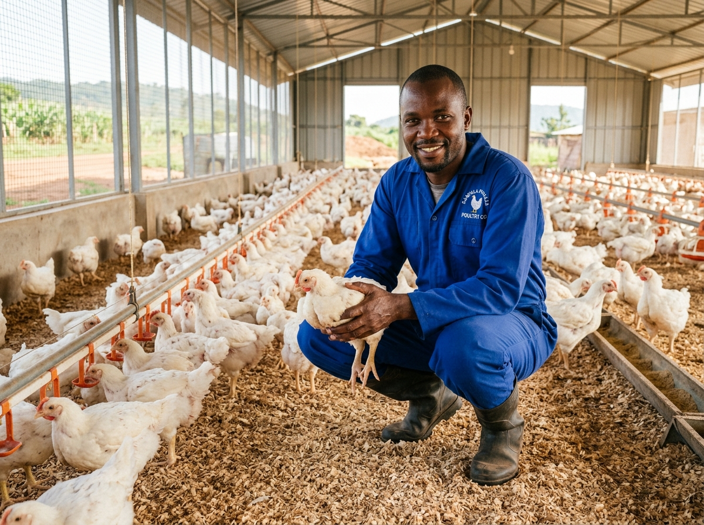
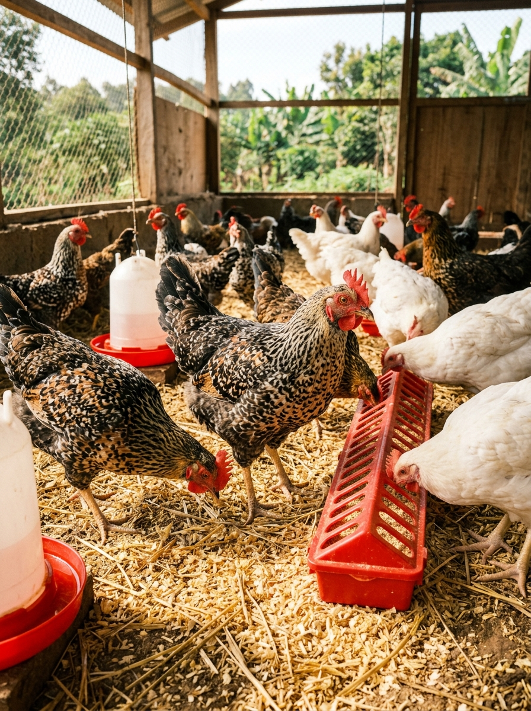
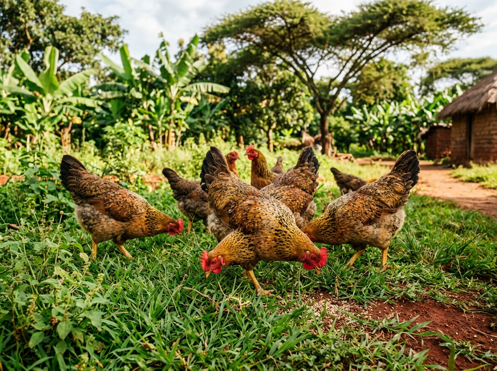

At Baraka Poultry Farm, we take pride in putting healthy, delicious food on your family's table and supporting Ugandan businesses. From our clean, well-tended pens to daily morning egg collections, we do everything with dedication, honesty, and care.

Whether you're shopping for daily household breakfast eggs, ordering tender broilers and rich Kroilers for a restaurant or event, or looking to double your matooke yields with nutrient-rich poultry manure, Baraka delivers quality and consistency you can rely on every time.
Strict flock sanitation and healthy housing ensure pure taste and total peace of mind.
Buy direct from our pens and save money—no extra middleman commissions.

Natural & Fresh

From day-old brooding to egg sorting and manure curing, we ensure high standards across every stage of production.